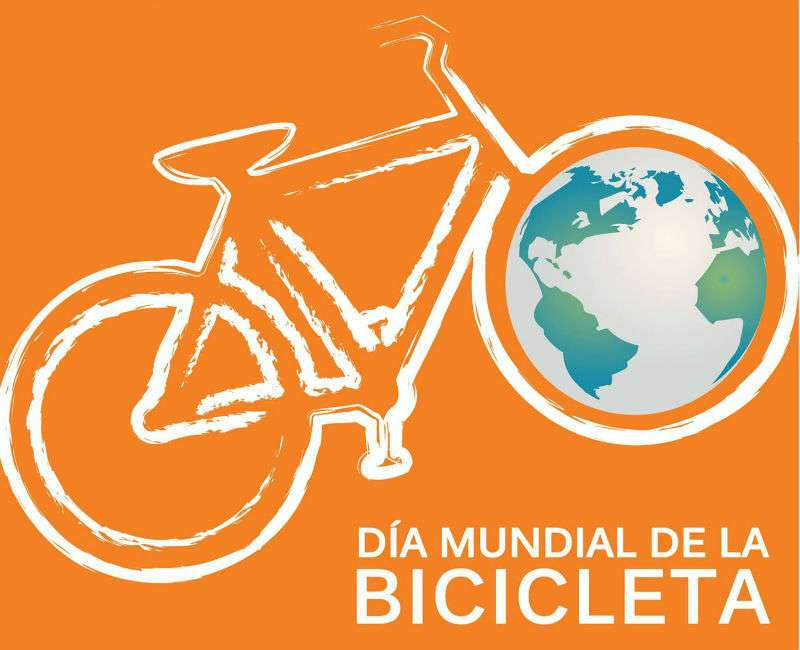

Se celebra este día, porque el 19 de abril de 1943 el doctor Albert Hofmann, padre del LSD, ingirió a propósito 250 µg de LSD. Tras ingerir la sustancia, Hofmann sintió que le costaba hablar de forma inteligible y pidió a su asistente de laboratorio, que estaba al tanto del experimento, que le acompañase en su viaje a casa en bicicleta, pues, por las restricciones del período de guerra, no había automóviles disponibles.
Durante el viaje a casa, el estado de Hofmann se agravó, posteriormente escribiría en su diario que todo lo que había en su campo de visión ondulaba, distorsionado como una imagen en un espejo cóncavo. Aunque avanzaba velozmente, tuvo la sensación paradójica de que permanecía inmóvil. Cuando llegó a casa, llamó a un doctor y pidió a su vecina algo de leche, creyendo que le ayudaría a recuperarse.
Cuando llegó el médico, no encontró ningún síntoma físico anormal, salvo las pupilas extremadamente dilatadas. Tras pasar varias horas aterrorizado, convencido de que un demonio había poseído su cuerpo, de que su vecina era una bruja y de que el mobiliario de su casa le amenazaba, el doctor Hofmann pensó que había enloquecido por completo.
Durante su ‘viaje’, las impresiones acústicas (como el ruido de un automóvil que pasaba) se transformaban en imágenes. Hofmann, al día siguiente despertó fresco y con la mente clara, aunque con cierto cansancio corporal. Desayunó con una sensación de bienestar y vida renovada, y encontró la comida deliciosa. Mientras caminaba por el jardín, notó que todos sus sentidos “vibraban con una sensibilidad superior”, que duró durante todo el día.
Desde entonces, todos los años, el 19 de Abril en todo el mundo la gente coge su bici para rememorar aquel “primer viaje” en bicicleta del doctor Hofmann.

Más info. click
aquí